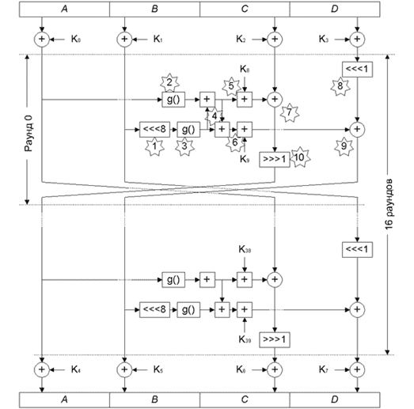
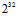
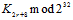
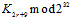
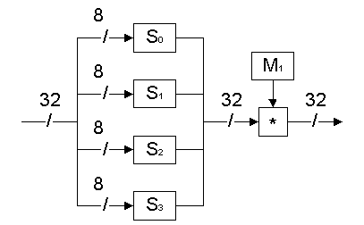
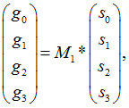
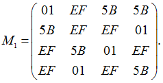

3.2.7. Блочный шифр Twofish.
3.2.7. Блочный шифр Twofish
Twofish разработан коллективом известных криптологов под руководством Брюса Шнайера (Bruce Schneier) − автора множества работ в области криптологии, разработчика известного алгоритма шифрования Blowfish и основателя американской компании Counterpane Systems, являющейся одним из мировых лидеров в области разработки средств криптографической защиты информации. Кроме него в разработке алгоритма принимали участие Джон Келси (John Kelsey), Крис Холл (Chris Hall) и Нильс Фергюсон (Niels Ferguson) из той же компании Counterpane Systems, а также Дуг Уайтинг (Doug Whiting) из Hifn Incorporated (разработка аппаратных средств защиты Internet-коммуникаций) и Дэвид Вагнер (David Wagner) из Университета штата Калифорния.
Twofish разбивает шифруемые данные на четыре 32-битных подблока (обозначим их A, B, C, D) (рис. 3.25), над которыми производится 16 раундов преобразований, в каждом из которых выполняются следующие операции:
1. Содержимое подблока B циклически сдвигается влево на 8 бит.
2. Подблок A обрабатывается операцией g( ), которая будет подробно описана ниже.
3. Подблок B также обрабатывается операцией g( ).
4. Подблок B накладывается на A с помощью сложения по модулю 232, после чего аналогичным образом выполняется наложение подблока A на подблок B.
5. Фрагмент расширенного ключа K2r+8 (где r − номер текущего раунда, начиная с 0) складывается с подблоком A по модулю 232.
6. Аналогично предыдущему шагу, K2r+9 накладывается на подблок B.

Рис. 3.25. Структура алгоритма Twofish
7. Подблок A накладывается на C операцией XOR.
8. Содержимое подблока D циклически сдвигается влево на 1 бит.
9. Подблок B накладывается на D операцией XOR.
10. Содержимое подблока C циклически сдвигается вправо на 1 бит.
B = B <<< 8,
A = g(A),
B = g(B),
A = A + B mod  ,
,
B = A + B mod ,
A = A + ,
B = B + ,
C = C Å A,
D = D <<< 1,
D = D Å B,
C = C >>> 1.
Операция g() (рис. 3.26) обрабатывает 32-битных входной подблок выполнением перечисленных ниже шагов.
 |
Рис. 3.26. Структура операции g() алгоритма Twofish |
1. Подблок делится на 4 фрагмента по 8 бит каждый.
2. Фрагменты прогоняются через таблицы замен 8*8 бит S0...S3. Таблицы замен вычисляются динамически и зависят от ключа шифрования; алгоритм построения таблиц замен будет подробно описан ниже.
3. Результат замен (обозначим его s0...s3) умножается на фиксированную матрицу M1:

где g0...g3 − байты выходного значения функции g().
Умножение выполняется в конечном поле GF(28) с образующим полиномом x8 + x6 +x5 +x3 +1.
Матрица M1 определена следующим образом (здесь указаны шестнадцатеричные значения):

В конце каждого раунда, за исключением последнего, подблоки A (значение до описанной выше обработки) и C меняются местами; подблоки B (значение до обработки) и D также меняются местами.
Перед первым раундом выполняется входное отбеливание − наложение операцией XOR на обрабатываемые подблоки четырех фрагментов расширенного ключа K0...K3. Аналогично выполняется выходное отбеливание − после последнего раунда с использованием подключей K4...K7.
Как видно, алгоритм Twofish имеет существенно более сложную структуру, чем Serpent, что компенсируется вдвое меньшим количеством раундов.